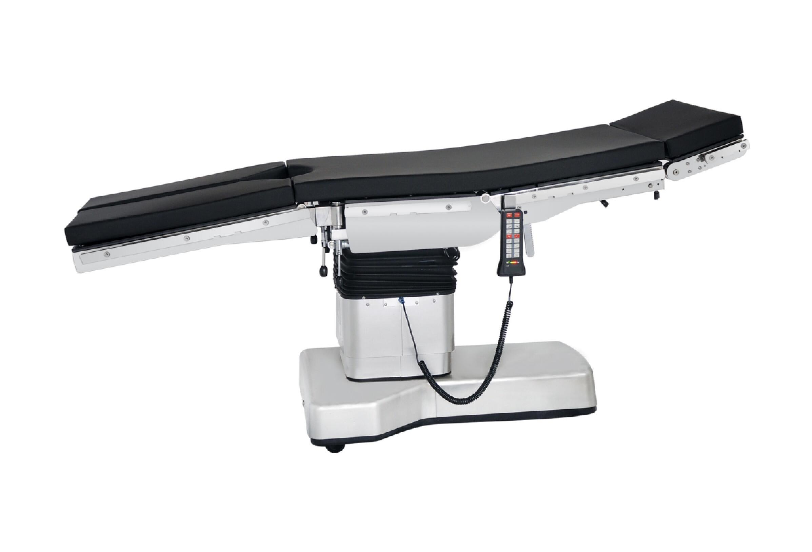
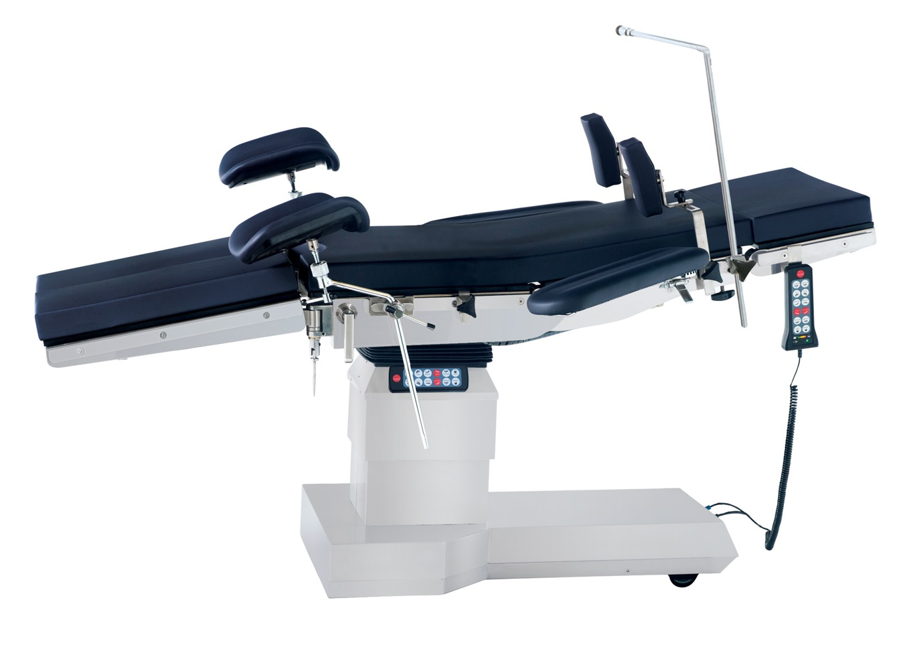
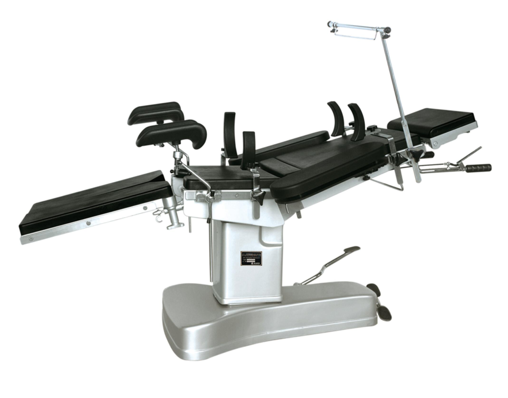
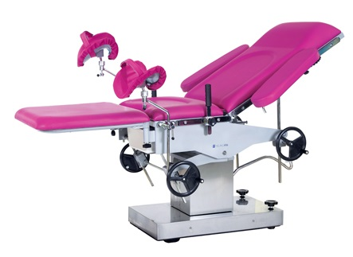
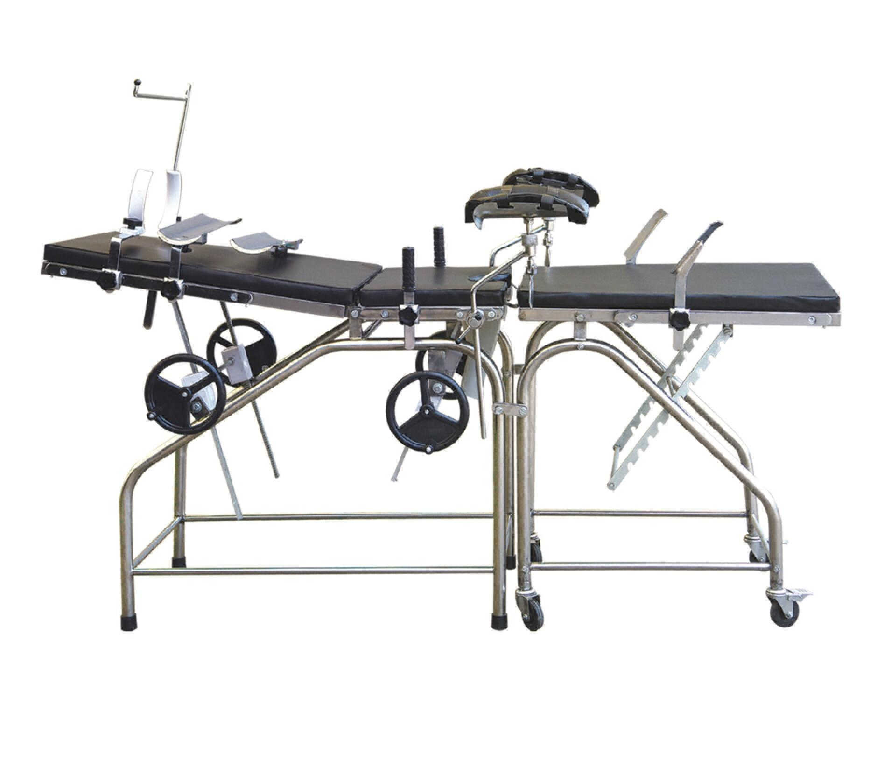

Ing. Jorge Martínez
Equipos médicos y de lavandería industrial a menor precio y con garantía!
Tag
Quienes Somos
Productos
Servicios
Ventajas
Contacto
Mesas de Operación
Home
Atrás
Mesa de Operación Eléctrica
AMT-D-III

Mesa de Operación Eléctrica
AMT-D-IA

Mesa de Operación Multifuncional
3008C
Mesa de Operación Universal
JY-A

Mesa de Operación Multifuncional Obstétrica
AMT-2C

Cama Obstétrica
AMT-3A

X
Mesa de Operación Eléctrica AMT-D-III
Motor hidráulico importado de Alemania
Válvula electromagnética importada
Anillo de sellado importado
AC / DC
Restauración automática
Hacer rayos X y brazo en C
La mesa puede deslizarse
Longitud: 2000 ± 100 mm
Ancho: 520 ± 20 mm
Altura mínima-máxima: (700-1150) ± 50 mm
Hacia la izquierda: ≥20 °; Hacia la derecha≥20 °
Cabezal hacia arriba: ≥50 °; Hacia abajo ≥90 °
Tablero hacia arriba: ≥75 °; Hacia abajo ≥50 °
Pierna hacia arriba: ≥10 °; Hacia abajo ≥90 °
Pata de pata hacia afuera: ≥180 °
Tensión de red: AC220, 50HZ
Potencia de entrada: 400 VA
Cintura Junta de elevación: 100 ± 20 mm
Esquina superior lumbar: ≤150 °; Esquina inferior lumbar≤110 °
Movimiento horizontal y longitudinal: 300 ± 30 mm
X
Mesa de Operación Eléctrica AMT-D-IA
Motor hidráulico importado
Válvula electromagnética importada
Anillo de sellado importado
Posición ultra baja para una operación prolongada
Soporta rayos X
La tabla de la pierna está separada y descargable
La cintura se puede levantar
Longitud: 2000 ± 100mm
Ancho: 520 ± 20 mm
Altura mínima-máxima: (560-860) ± 50 mm
Trendelenburg: ≥20 °; Rev-Trend≥18 °
Hacia la izquierda: ≥20 °; Hacia la derecha≥20 °
Tablero de cabeza hacia arriba: ≥50 °; doblar hacia abajo ≥90 °
Tablero hacia arriba: ≥70 °; doblar hacia abajo ≥20 °
Tablero de pierna hacia arriba: ≥15 °; doblar hacia abajo ≥90 °
Tablero de pierna hacia afuera: ≥180 °
Tensión de red: AC220 ± 10%, 50 HZ
Potencia de entrada: 500VA
Elevación del tablero de la cintura: 100 ± 20 mm
Esquina superior lumbar: ≤160 °; Esquina inferior lumbar≤105 °
X
Mesa de Operación Multifuncional 3008C
Anillo de sellado tipo Y importado
La base es de acero inoxidable
El tablero de la pierna está separado y descargable
Doble cubierta puede hacer rayos X
Longitud: 2050 ± 50mm
Ancho: 480 ± 20 mm
Altura mínima-máxima: (750-950) ± 50 mm
Trendelenburg 20 °; Tendencia de rev .: 20 °
Hacia la izquierda ≥20 °; Hacia la derecha≥20 °
Cabezal Plegable hacia arriba ≥30 °; doblar hacia abajo ≥90 °
Tablero plegable hacia arriba ≥75 °; doblar hacia abajo ≥5 °
Tablero de piernas plegado hacia afuera ≥90 °
Elevación del tablero de la cintura: 100 ± 20 mm
Pierna del tablero derramado ≥180 °
X
Mesa de Operación Universal JY-A
Tiene ruta de cassette
Soporta rayos X
Sistema de control Air Spring
Longitud: 2000 ± 50 mm
Ancho: 500 ± 20 mm
Altura mínima-máxima: (700-950) ± 50 mm
Hacia la izquierda ≥15 °; Hacia la derecha ≥15 °
Cabezal Plegable hacia arriba ≥30 °; doblar hacia abajo ≥90 °
Tablero plegable hacia arriba ≥70 °; doblar hacia abajo ≥15 °
Tablero de piernas plegado hacia arriba ≥90 °
Tabla de piernas dividida ≥180 °
Elevación del tablero de la cintura ≥70 mm
X
Mesa de Operación Multifuncional Obstétrica AMT-2C
La mesa auxiliar es descargable
Paso de pie elevador hidráulico
La base y la columna vertical están hechas de acero inoxidable 304 de alta calidad
Longitud: 1950 ± 50 mm
Ancho: 600 ± 10 mm
Altura: (750-950) ± 50 mm
Tablero trasero plegado hacia arriba ≥50 °; doblar hacia abajo: ≥3 °
Tabla de piernas hacia afuera ≥90 °
Sección trasera: 800 × 600 mm
Sección del asiento: 410 × 600 mm
Mesa auxiliar: 600 × 600 mm
X
Cama Obstétrica AMT-3A
La mesa está hecha de acero inoxidable
Varias acciones del lecho auxiliar se ajustan mediante trinquete
Longitud 1950 ± 50 mm
Ancho 600 ± 20 mm
Altura 750 ± 20 mm
Sección posterior Doblar hacia arriba ≥50 °; doblar hacia abajo ≥15 °
Sección del asiento plegado hacia arriba ≥30 °; doblar hacia abajo ≥8 °
Tablero de piernas plegado hacia arriba ≥30 °; doblar hacia abajo ≥30 °